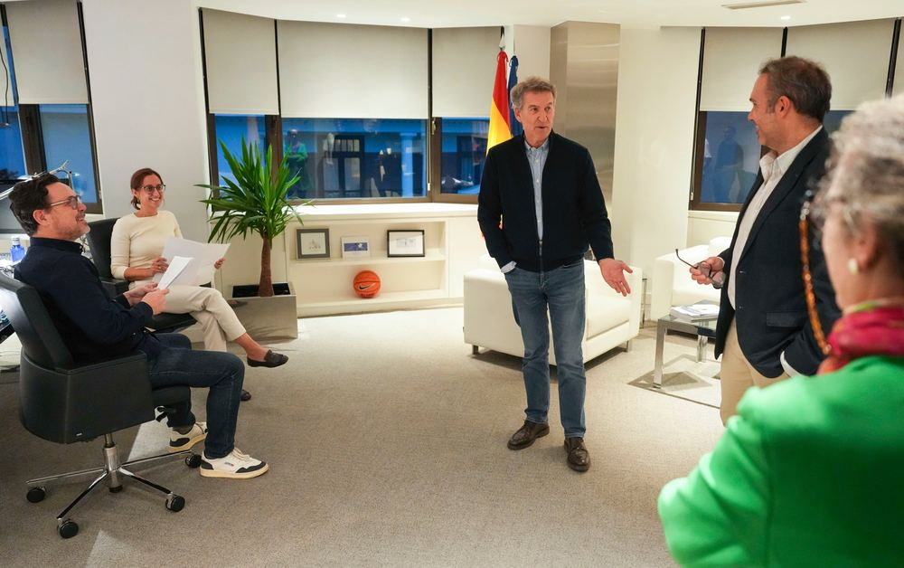

Feijóo prepara el debate con su equipo gallego y sin Miguel Ángel Rodríguez: máxima presión sobre Sánchez sin arriesgar el perfil presidencial

En Génova sostienen que “toda la presión la tiene Pedro Sánchez”, que es quien va por detrás en las encuestas
“Me queda un día menos para ser presidente del Gobierno”, remarcó este martes Alberto Núñez Feijóo en un mitin en Logroño (La Rioja), a solo 48 horas de enfrentarse en el cara a cara de este jueves con Pedro Sánchez. El mensaje del candidato del PP no es casual; lo ha repetido de una u otra forma en los actos de los últimos días y se corresponde con la visión en la sala de máquinas de la campaña del PP. Los populares creen que todo va muy bien, que no han cometido errores importantes y que la ventaja del bloque de la derecha es tan amplia sobre el de la izquierda (de hasta 15 puntos, según el PP, de 13 puntos en el tracking de 40dB. para EL PAÍS , dejando al margen a los nacionalistas) que,…